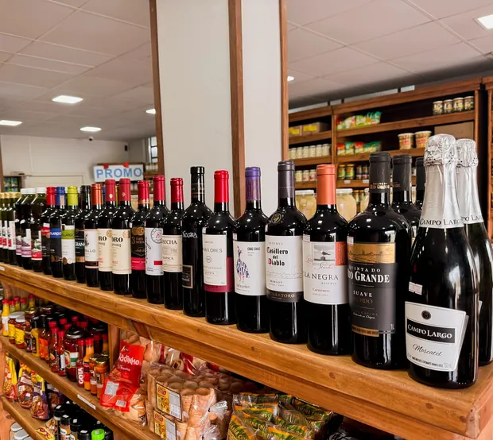
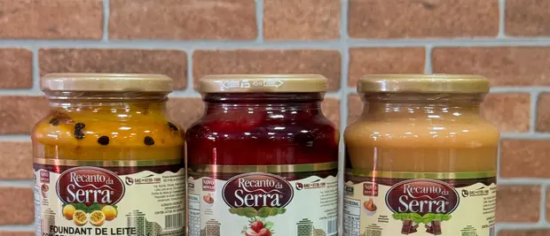
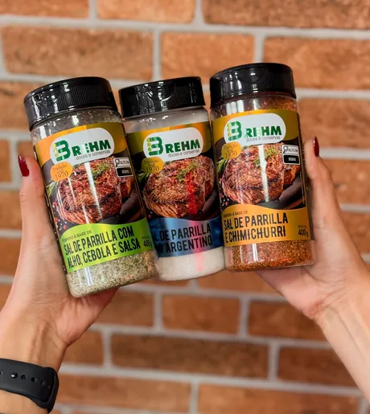

A loja do Petrópolis
Na Rua dos Aimorés, as conservas ocupam uma parede inteira. Ao lado da linha Amo, a loja também tem vinhos, embutidos, frios, doces e temperos.
O que está nesta página é de outras marcas, que a Amo revende. Os produtos com o rótulo Amo estão em Produtos Amo.
Perguntar no WhatsApp

Embutidos e frios
Linguiças e salames pendurados no expositor de madeira, e os produtos Olho no balcão. É a parte da loja que completa a tábua.
Perguntar o que tem hojeMais do que você encontra no balcão
Marcas de outros fabricantes, fotografadas na própria loja.



Do balcão para o fogo
Carne, linguiça, pimentão e cheiro-verde no disco: é o tipo de receita que aparece no Instagram da Amo, @amo.conservas.
Pedir a tabela no WhatsApp
Passe na loja, ou peça pelo WhatsApp
Rua dos Aimorés, 4897
Petrópolis, Joinville – SC
CEP 89208-720
Horário de atendimento
- Segunda a sexta
- 9h às 12h e 14h às 18h
- Sábado
- 9h às 12h
Instagram @amo.conservas. Nota 4,9 no Google, em 186 avaliações.